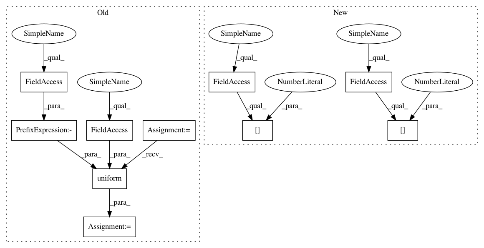

2079a72d90e527149e527b5cb376b37ddc9e25bd,torchsample/transforms/affine_transforms.py,Shear,__call__,#Shear#,312
Before Change
// self.coords = th_iterproduct(fixed_size[0], fixed_size[1])
def __call__(self, x, y=None):
shear = random.uniform(-self.shear_range, self.shear_range)
shear_matrix = torch.FloatTensor([[1, -math.sin(shear), 0],
[0, math.cos(shear), 0],
[0, 0, 1]])
if self.lazy:
After Change
else:
x_transformed = th_affine2d(x,
shear_matrix,
mode=self.interp[0])
if y is not None:
y_transformed = th_affine2d(y,
shear_matrix,
mode=self.interp[1])
return x_transformed, y_transformed
else:
return x_transformed
In pattern: SUPERPATTERN
Frequency: 3
Non-data size: 10
Instances
Project Name: ncullen93/torchsample
Commit Name: 2079a72d90e527149e527b5cb376b37ddc9e25bd
Time: 2017-05-09
Author: ncullen.th@dartmouth.edu
File Name: torchsample/transforms/affine_transforms.py
Class Name: Shear
Method Name: __call__
Project Name: ncullen93/torchsample
Commit Name: 2079a72d90e527149e527b5cb376b37ddc9e25bd
Time: 2017-05-09
Author: ncullen.th@dartmouth.edu
File Name: torchsample/transforms/affine_transforms.py
Class Name: Rotate
Method Name: __call__
Project Name: ncullen93/torchsample
Commit Name: 2079a72d90e527149e527b5cb376b37ddc9e25bd
Time: 2017-05-09
Author: ncullen.th@dartmouth.edu
File Name: torchsample/transforms/affine_transforms.py
Class Name: Shear
Method Name: __call__
Project Name: ncullen93/torchsample
Commit Name: 2079a72d90e527149e527b5cb376b37ddc9e25bd
Time: 2017-05-09
Author: ncullen.th@dartmouth.edu
File Name: torchsample/transforms/affine_transforms.py
Class Name: Translate
Method Name: __call__